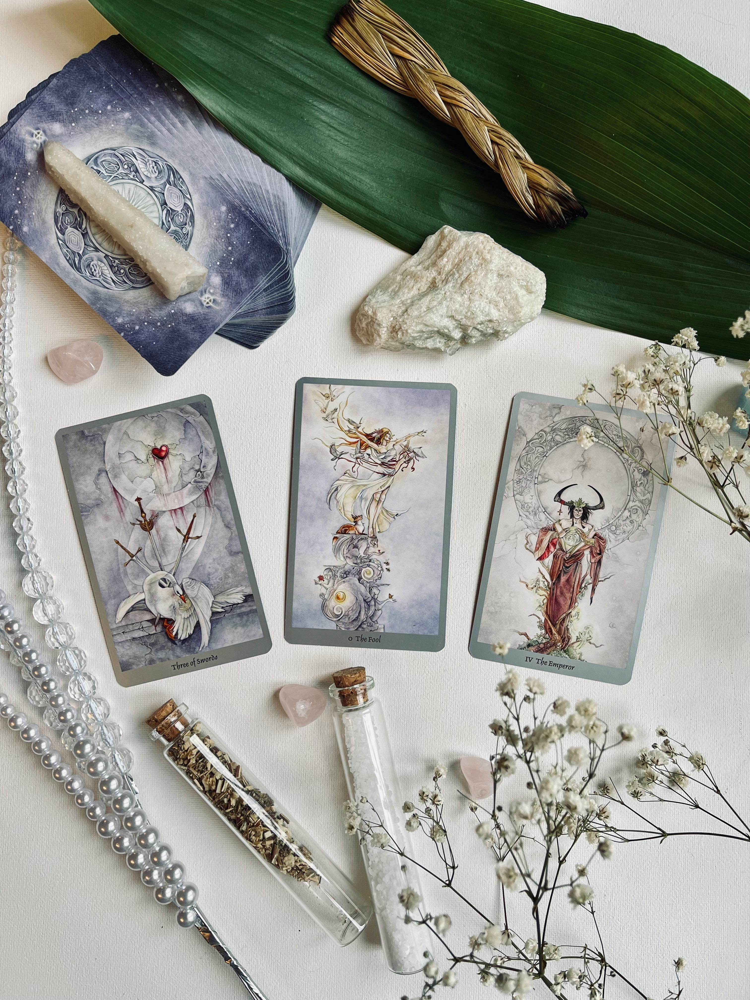
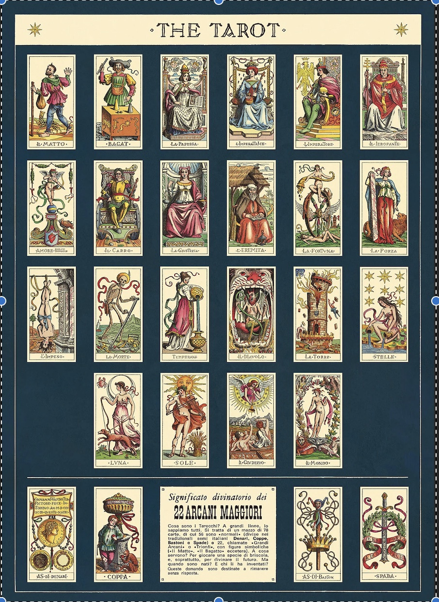

Tarot is a centuries-old system of divination that combines symbolism and intuition to offer insights into the past, present, and future. Tarot readings are done through a 78-card deck and are usually performed by a skilled practitioner (although one doesn’t have to be a professional to give a tarot reading!). Tarot readers draw and then interpret cards in response to a seeker's questions or concerns.

The Major Arcana: These 22 cards represent significant life events, lessons, and spiritual themes. Each card depicts a different archetype, such as The Fool, The Magician, The High Priestess, and The World, symbolizing various aspects of the human experience and journey.
The Minor Arcana: Comprising 56 cards, the Minor Arcana is further divided into four suits—Wands, Cups, Swords, and Pentacles (or Coins in some decks). Each suit corresponds to a different element (fire, water, air, and earth) and represents different aspects of daily life, such as creativity, emotions, challenges, and material matters.
While tarot cards are often used for divination and gaining insight into the past, present, and future, they can also serve as a tool for self-reflection, meditation, and personal growth. Many practitioners use tarot cards to explore their subconscious thoughts and emotions, seeking clarity and guidance in various aspects of their lives.
It's important to note that tarot readings are not definitive predictions of the future but rather a way to tap into one's intuition and inner wisdom. The interpretation of tarot cards can vary widely depending on the reader and the context of the reading, making them a versatile and deeply personal tool for spiritual exploration and introspection.

